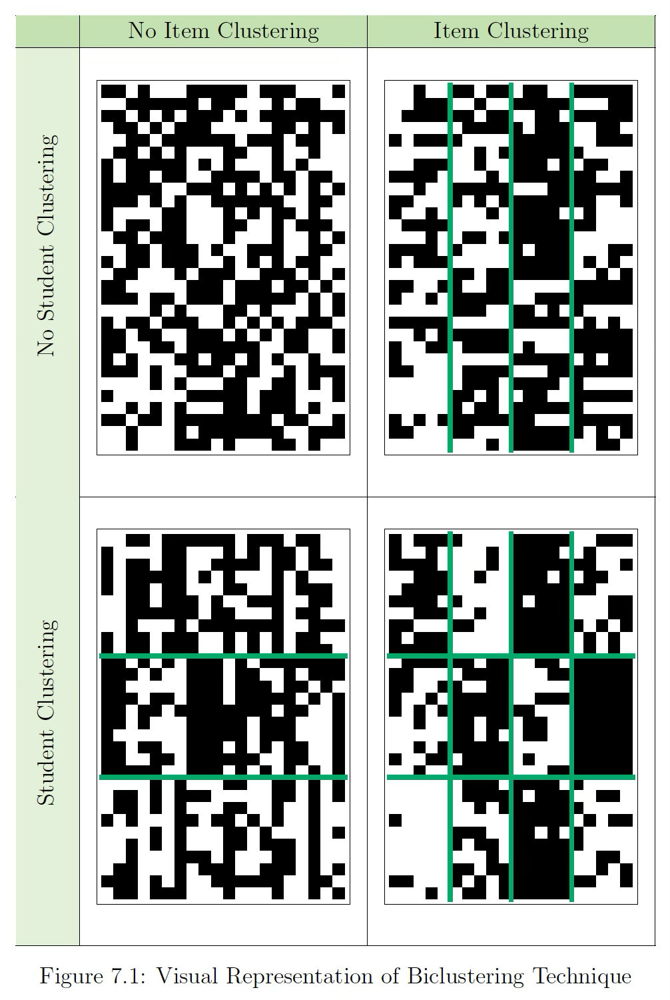
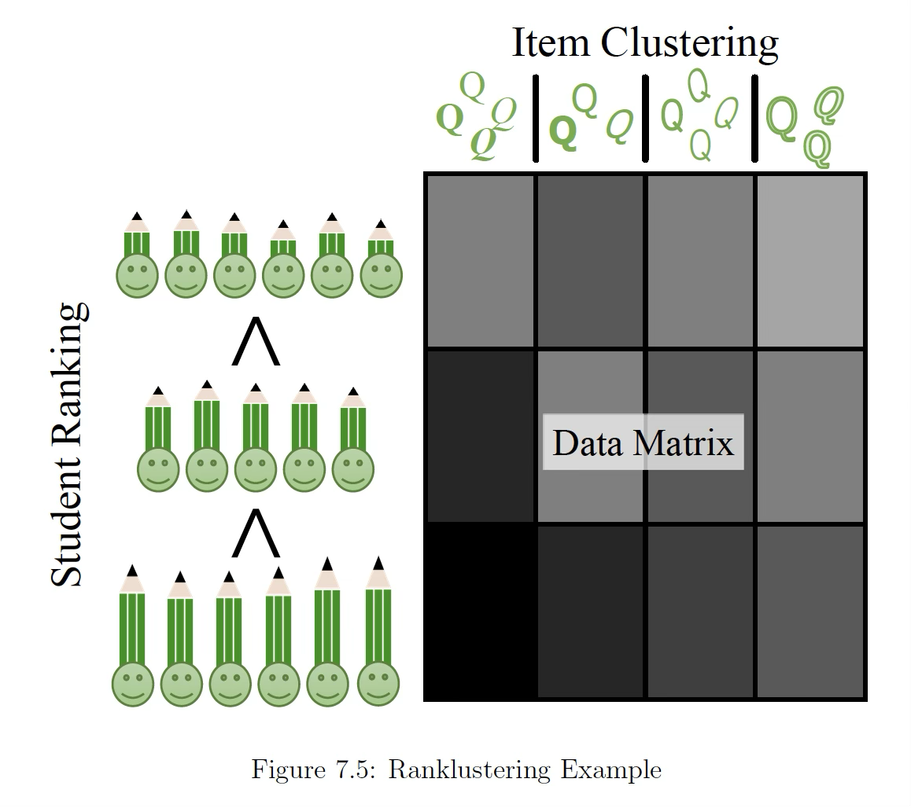
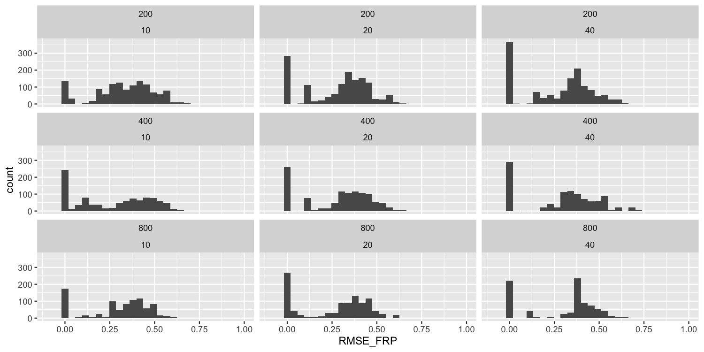
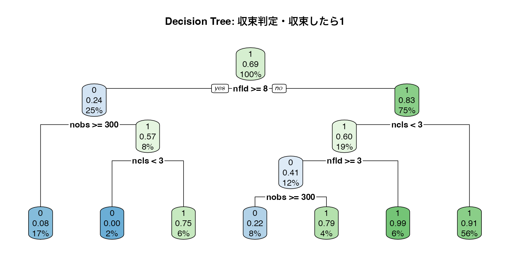
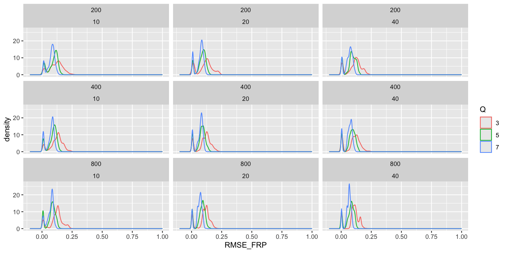

# A tibble: 1 × 1
perfect
<dbl>
1 0.314Biclusteringの精度について
自己紹介
- 小杉考司（こすぎこうじ）
- ベイズ塾1号生
- 専門分野
- 心理尺度の作り方，使い方
- 多変量解析（因子分析，多次元尺度構成法），統計モデリング
- 統計パッケージ開発；テスト理論用パッケージexametrika

Biclusteringとは
- 行と列を同時にクラスタリングする方法
- テストデータ(正答1/誤答0)の分析に用いて，「どういう人がどういうパタンで回答しているか」がわかる。
- 行(受験者)の分類をクラス，列(項目)はフィールドと呼ぶ
- クラスに順序性を仮定した，ランクラスタリングというのもあるよ
BiclusteringのArrayプロット


Shojima,K. (2022) Test Data Engineering, Springer
Biclusteringはなぜ必要か
- リッカート法→因子分析，という不適切な慣例が横行していると小杉は考えているからです。
- 個人の内部に関する要素の同一性(局所均質的構成概念の仮定;Borsboom(2005))が満たされないものは，カテゴリの度数を数え上げることさえ限定的な意味しか持ち得ない
- 本当はわからないけどこのカテゴリに反応したという意味で「同じ」とみなす！
- 測定モデルに言及しないので色んなシーンで使えると思います
- みんなBiclusteringやろうず
Now on CRAN
- BiclusteringはCRANに登録されています
- 最新版は1.6.0で，今朝アップロードし，反映されてました
- Biculustring.norminal /Biclustering.ordinal is available!
- New function GridSerch() for grid search optimization of model parameter
- 行動計量学会春の合宿セミナー資料に使い方を書いてあります。
- パッケージについてはR journalに投稿中(Preprintはこちら)
使えんのか，オイ
- 局所解に陥ったりしないんですか？一意に求まるんですか？という質問がよくある
- パラメタリカバリで確認しておかねば(泥縄)
シミュレーションの設計(1/2)
2値Biclusteringで考える
- 人数は200, 400, 800とする
- 項目数は10, 20, 40とする
- クラス数を決める(2,3,5,10とする)
- 例えばC=5なら，25, 25, 50, 50, 100 (N=250)のように受験者の所属クラスを決める
- フィールド数を決める(2,3,5,10とする)
- 例えばF=3なら，2, 4, 4 (J=10)のように項目の所属フィールドを決める
シミュレーションの設計(2/2)
2値Biclusteringで考える
- \(\Pi(C \times F)\)を整然と決める
- \(\Pi\)はクラスとフィールドの関係を決める行列
- 要素はあるクラスcの人におけるフィールドfの項目に対する期待正答率
- \(\Pi\)はクラスとフィールドの関係を決める行列
- データセット\(\boldsymbol{U}\)を所属クラス，所属フィールドの正答率からベルヌーイ乱数で生成
各条件で100回ずつやってみた
従属変数は\(\Pi\)(Biclustering的にはField Reference Profile, FRPという)のRoot Mean Square Errorをみます。
30%は完璧にリカバリできてる。
統計量で見てみる
RMSE_FRP
Min. :0.0000
1st Qu.:0.1027
Median :0.3356
Mean :0.2845
3rd Qu.:0.4264
Max. :0.7067
NA's :4516 - 平均0.285，中央値0.336はいい方なんだろうか。
- 31.361 %は推定に失敗してる？
パターンごとの分布
分布で確認してみる
収束しなかったパターンを確認してみる
- フィールド数が多くなると失敗しがち
- クラス数が小さすぎると失敗しがち
シミュレーションの設計2
多値バイクラスタリングでやってみる
カテゴリ数Qを3,5,7に変える
24時間かかりました
各条件で100回ずつやってみた
従属変数は\(\Pi\)が\(C \times F \times Q\)の配列になってますが，基本的には同じFRPのRMSEで。
# A tibble: 1 × 1
perfect
<dbl>
1 0完璧なリカバリは無理・・・だと？
パターンごとの分布
分布で確認してみる
統計量で見てみる
RMSE_FRP
Min. :0.001163
1st Qu.:0.063555
Median :0.088566
Mean :0.086038
3rd Qu.:0.113883
Max. :0.278838 - 平均0.086，中央値0.089で，2値より適合度はいい
- 完璧に推定できる，はないけど，推定失敗(NA)もない
- ただし，EMアルゴリズムがmax_iterに達していて，推定が終わってないケースがあるようだ
傾向を見る決定木

- サンプルサイズや項目数の関数ではなさそう？
Fin
- いろいろご意見ください
- よかったら使ってやってください